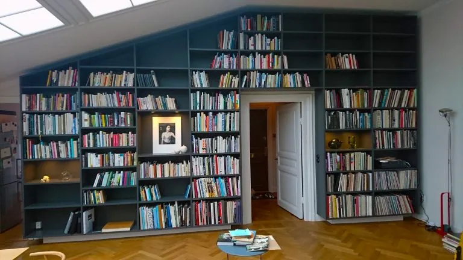

01
Material
Rätt material, noggrant utvalt för uttryck, funktion och lång livslängd.

Jensens Finsnickerier · Gävle
Specialsnickerier och platsbyggda inredningar, skapade med precision från första idé till färdigt montage.
Vår grund
Från första materialval till färdigt montage följer vi varje detalj.
Rätt material, noggrant utvalt för uttryck, funktion och lång livslängd.

Hantverkskunnande och modern teknik med millimeterkontroll i varje moment.

En sammanhållen process från idé och produktion till ytbehandling och montage.
Kompetens

Platsbyggda lösningar med känsla för form, funktion och material.

Specialinredningar för miljöer där uttryck och hållbarhet är viktiga.

Genomtänkta lösningar från idé till färdigt montage.




Hantverk och precision
Hos oss är traditionellt hantverk och genuint kunnande grunden i verksamheten. Tillsammans med en avancerad maskinpark gör det att vi alltid siktar på högsta kvalitet i det vi gör.
“Kreativitet från idé till produktion och montage.” – Sören Jensen
I snart 40 år har vi tillsammans med våra kunder skapat måttanpassade interiörer och exteriörer där form, funktion och kompromisslös kvalitet går hand i hand. Med gediget hantverkskunnande och omsorg om varje detalj hjälper vi både privatpersoner och företag att skapa lösningar som är byggda för att hålla.
Läs mer om ossKontakta oss för att prata om idé, material, lösning och utförande.